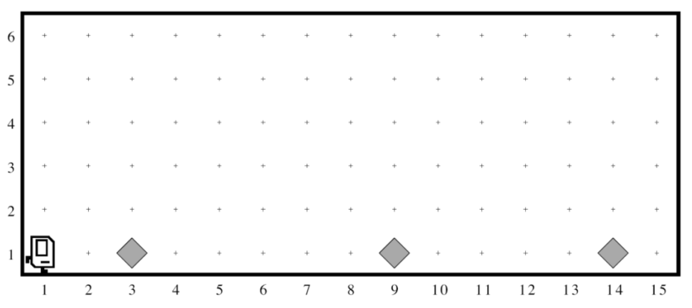
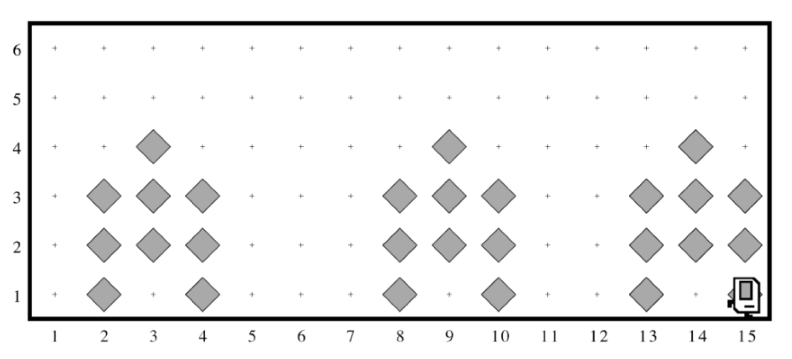
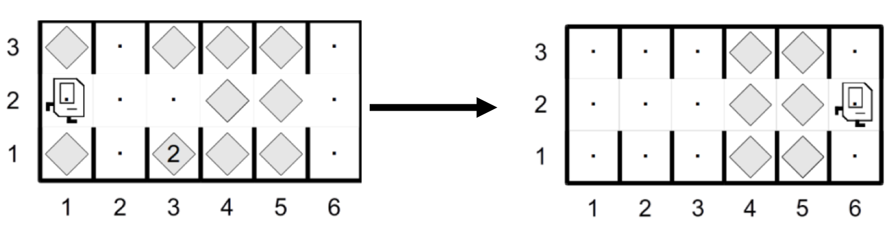

Section 1. Karel the Robot¶
This section covers some of the important material from class in a setting that is small enough for you to go over practice problems and ask questions. Your goal is to solve Karel problems that involve stepwise refinement, also known as top-down design.
Here is the starter code:
Hospital Karel¶
Countries around the world are dispatching hospital-building robots to make sure anyone who gets sick can be treated. They have decided to enlist Karel robots. Your job is to program those robots.
Karel begins at the left end of a row that might look like this:

Karel’s starting state for hospital karel, on the bottom left of the world facing east, with beepers placed along the path.¶
Each beeper in the figure represents a pile of supplies. Karel’s job is to walk along 1st Street and build a new hospital in the places marked by each beeper. The new hospital should be centered at the point at which the bit of debris was left, which means that the first hospital in the diagram above will be constructed with its left edge along 2nd Avenue, since the beeper was originally at 3rd Avenue.
At the end of the run, Karel should be at the east end of 1st street having created a set of hospitals that look like this for the initial conditions shown above:

Karel’s end state, in place of each beeper is a ‘hospital’ which is three sets of three columns of stacked beepers, each 3 beepers tall, with the middle column of beepers shifted up one place from the left and right columns¶
Keep in mind the following information about the world:
Karel starts facing east at (1, 1) with an infinite number of beepers in its beeper bag.
The beepers indicating the positions at which hospitals should be built will be spaced so that there is room to build the hospitals without overlapping or hitting walls.
You will not have to build a hospital that starts in either of the last two columns.
Karel should not crash into a wall if it builds a hospital that ends in the final corner.
Write the code to implement Hospital Karel. Use helper functions. Think, “what are the high-level steps Karel needs to take?” and make these steps into helper functions. Remember that your program should work for any world that meets the above conditions.
If you’re working in the starter project, write your code in the main() function of HospitalKarel.py. To test your code, open the terminal and enter:
python3 HospitalKarel.py
(replace python3 with py or python if you’re using Windows).
Solution
def main():
while front_is_clear():
if beepers_present():
build_hospital()
if front_is_clear():
move() # Karel needs to be facing East
def build_hospital():
"""
Precondition: Karel is on a beeper representing supplies for a hospital
Postcondition: Karel is facing East
"""
pick_beeper()
back_up()
turn_left()
place_three_beepers()
transition_to_next_column()
place_three_beepers()
turn_around()
transition_to_next_column()
place_three_beepers()
turn_left()
def place_three_beepers():
"""
Creates a line of three beepers
Precondition: Karel is in the first square in the line
Postcondition: Karel is in the last square in the line
"""
for i in range(2):
put_beeper()
move()
put_beeper()
def back_up():
"""
Backs up one corner, facing in the same direction
"""
turn_around()
move()
turn_around()
def transition_to_next_column():
move()
turn_right()
move()
turn_right()
Karel Defends Democracy¶
The 2000 Presidential Elections were plagued by the hanging-chad problem. To vote, voters punched columns out of a paper ballot; but if they only punched partially, the column was left hanging. Luckily, Karel is here to save the day!
In Karel’s world, a ballot consists of a series of columns that a voter can “punch out”. Karel starts on the left of a ballot and should progress through each column. If a column contains a beeper in the center row, the voter did not intend to vote on that column, and Karel should move to the next column. However, if a column contains no beeper in the center row, Karel must make sure that there is no hanging chad. In other words, Karel should check the corners above and below and remove any beepers. A corner may contain any number of beepers. Karel must finish facing east at the rightmost edge of the ballot.
An example initial world is shown on the left below. The world on the right below shows what Karel’s final world should look like (when given the initial world on the left).

Democracy karel start and end states. Karel fills in each column by fixing the hanging chad.¶
Keep in mind the following information about the world:
Karel starts facing east at (1, 2) with an infinite number of beepers in its beeper bag.
Karel must end up facing east at the end of 2nd street.
The world consists of an arbitrary number of 3-height columns, and Karel can travel along the middle row without hitting a wall.
Write the code to implement Democracy Karel. Use helper functions. Think, “what are the high-level steps Karel needs to take?” and make these steps into helper functions. Remember that your program should work for any world that meets the above conditions.
If you’re working in the starter project, write your code in the main() function of DemocracyKarel.py. To test your code, open the terminal and enter:
python3 DemocracyKarel.py
(replace python3 with py or python if you’re using Windows).
Solution
def main():
"""
To avoid the fencepost problem, we split the
logic into a loop to process columns, plus one
final call to check the last column.
"""
while front_is_clear():
process_column()
move()
process_column()
def process_column():
"""
Clears chad from the current column, if any.
Precondition: Karel is standing in the center of a column, facing East.
Postcondition: Karel is back in the same place/orientation and chad has been cleared
"""
if no_beepers_present():
remove_all_chad()
def remove_all_chad():
"""
Clears chad from the current column
Precondition: Karel is standing in the center of a column to be cleared
Postcondition: Karel is standing in the same place and the column has been cleared
"""
turn_left() # clean the upper corner
clean_chad()
turn_around() # clean the lower corner
clean_chad()
turn_left() # face East
def clean_chad():
"""
Clears chad from the corner Karel is facing
Precondition: Karel is facing a corner to be cleared of chad
Postcondition: Karel is in the same location/orientation, but
all chad has been cleared from the corner Karel is facing.
"""
move()
while beepers_present():
pick_beeper()
back_up()
def back_up():
"""
Backs up one corner, leaving Karel facing in the same
direction. If there is no space behind Karel, it will run
into a wall.
"""
turn_around()
move()
turn_around()
def turn_around():
turn_left()
turn_left()